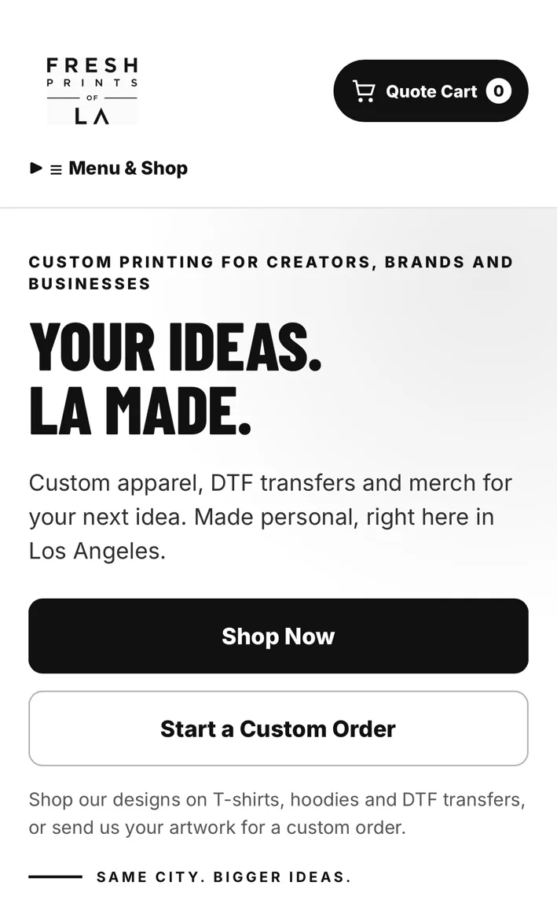
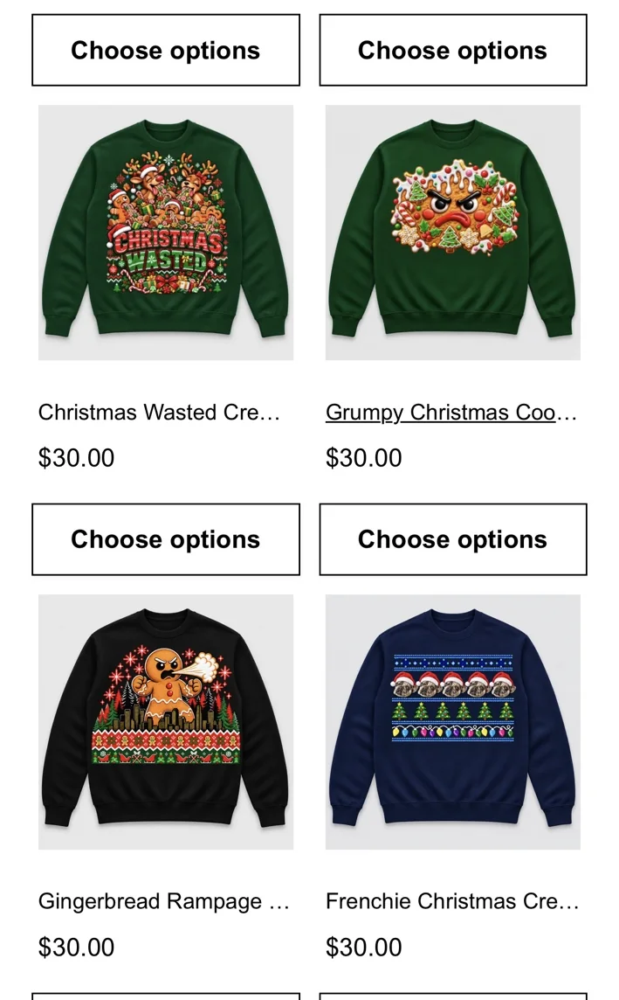
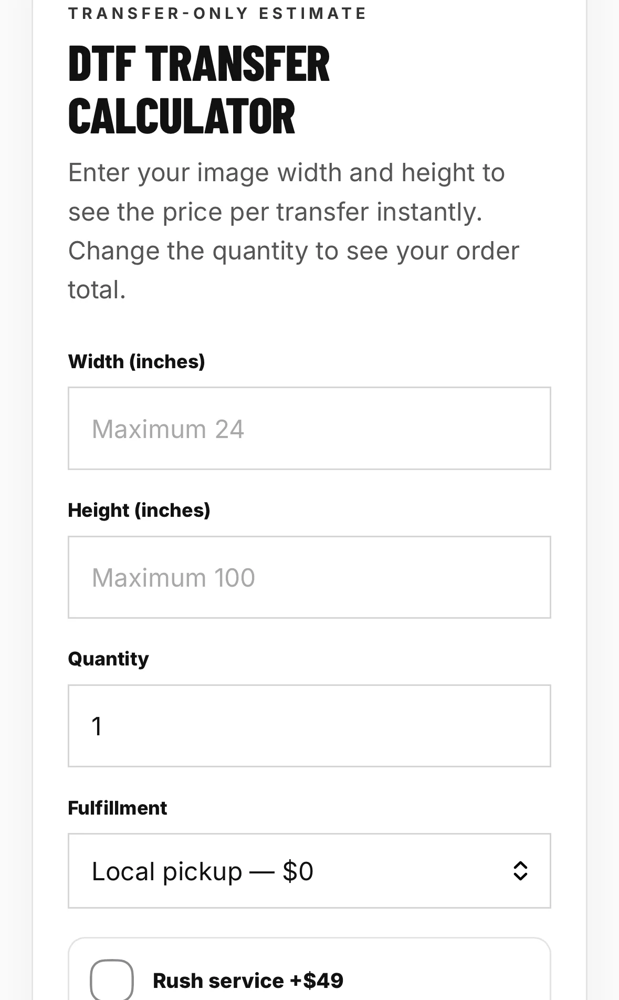
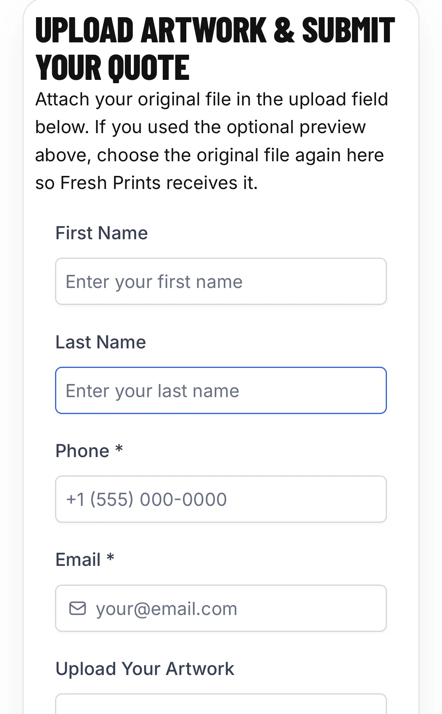

Fresh Prints
of LA.
Translating a custom-printing business's ordering needs into a customer-facing digital platform, from product discovery and pricing to quote intake.
Make complex orders easier to start.
Custom apparel orders can involve choices that standard one-click retail purchases do not: print dimensions, quantity, garment type, artwork, turnaround, and fulfillment. The website was designed to bring product browsing and quote initiation into one clearer digital experience.
Business impact is not yet quantified; no conversion-rate, sales, or time-savings claims are made here.
A connected customer journey.
Conceptual workflow summary. Downstream CRM automation and transaction completion require separate verification.




Genuine mobile-page captures supplied by the project owner, November 2026. Cropped only to remove phone and browser controls; no site elements were changed. Tap an image to enlarge.
Human-directed, AI-assisted delivery.
The project was directed and built using ChatGPT as an AI development assistant. This included translating the business concept into site structure, iterating on functional components, and refining the customer experience.
- Designed and implemented the product-facing website experience.
- Built a customer-oriented pricing experience for custom apparel and transfers.
- Created quote and artwork-intake pathways with an embedded LeadConnector form.
- Connected promotional merchandise campaigns to the primary storefront.
- Iterated on presentation, usability, and workflow requirements.
Client authorized use of the business name and screenshots. Transaction processing, workflow delivery, and operational outcomes have not been independently established.
Implementation competencies.
Results to document next.
This is a delivered-project case study, not a fabricated ROI story. Once the client has enough activity, the next measurement cycle should assess quote requests, completed orders, inquiry response time, conversion to purchase, and customer support workload.
Metrics pending client reporting and validation. No results have been invented.
Explore more systems.
See how this commercial implementation relates to CRM workflow architecture and educational product design.
← Back to portfolioLive client website ↗